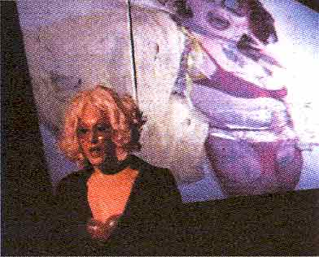

| Februar 2002 |
| I'M GOING TO BE A REAL WOMAN FROM NOW ON... |
|
| Hvad | "Ramona Unplugged ll" |
| Hvor | Sub Club, Terra Nova |
| Tekst | Jørgen Callesen |
| Foto | Chris T |

fuldkommen "normal" for enhver pris.
Man følger gennem flere grotesk fremstillede sceniske tableauer, hvad man kan kalde en skæbnehistorie om et drengebarn, som definerer sig selv som Pigen Ramona og hendes videre søgen efter en identitet som "rigtig" kvinde med alt hvad dette indbefatter af stereotyper.
Hun møder bl.a. kærligheden i Harry - tror hun - men han er skredet lige så hurtigt hun får sagt ordet ægteskab. Dette er performancens nok mest tragiske scene - et klaustrofobisk mareridt af ensomhed og ulykke. Men det bliver aldrig for følelsestungt i sit udtryk. Bo Hagen Clausen formår at mestre kunsten at balancere lige på grænsen mellem det tragiske og komiske.
I stoflig forstand er der ikke nogen Harry tilstede på scenen ligesom der ikke er en far eller mor i tidligere scener, men Bo Hagen Clausen spiller overbevisende op til de tavse og fraværende karakterer. Der skabes derved et lukket univers og tankerne ledes hen på om det er Ramonas indre forestillingsverden, der udspiller sig?
I desperation transformeres hun "live" på scenen til kvinde - Penis klippes af og to implatater presses godt tilrette i bh'en. Sidste tiltag som post-opereret transseksuel er drømmejobbet som blonderet sekretær. Målet er nået - hun er fuldkommen og normal eller er hun blevet offer for sin egen fantasi? Bliver hun ikke gradvist udvisket - Mod det uigenkendelige - til fordel for et drømmebillede, en illusion om et køn - et fantasifoster. Vil Ramonas drøm nogensinde gå i opfyldelse - bliver hun en "rigtig" kvinde; for hvad er en "rigtig kvinde"?
Performancen rækker ud og prikker til den "krops-konsumkultur", som er blevet så anmassende indenfor de sidste årtier - forlængelse af kønsorganer og silikonebryster til udsalgspris. Kroppe som transformeres eller deformeres - du kan blive den, du ønsker.
Med denne performance sættes den uomgængelige selviscenesættelse på spidsen. Maskeraden gøres så og sige synlig - den afklædes og kønnet som en konstrueret størrelse træder i relief - kønnet som en egen iscenesættelse.
På trods af adskillige lag virker performancen på intet tidspunkt rodet - den er enkel i sin sceniske totalitet - uden dog at være simpel og med få effekter er det visuelt en fryd at betragte den kraftfuldhed og iver, hvormed Bo Hagen Clausen spiller igennem - figuren Ramona lever.
Print denne side